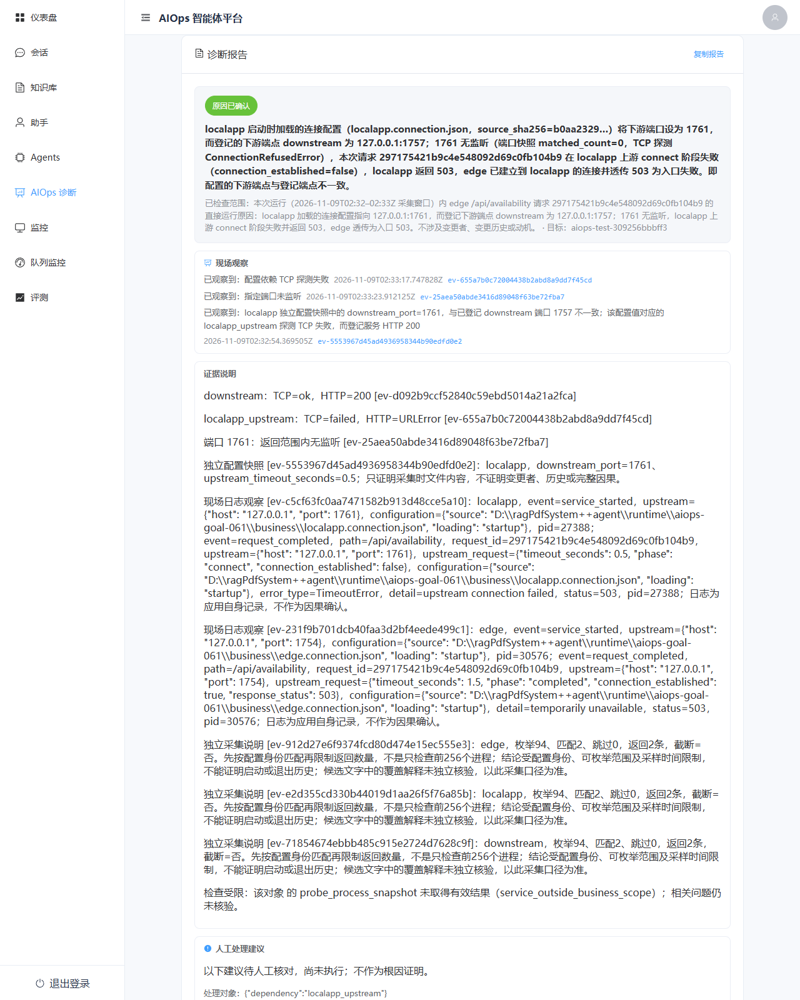
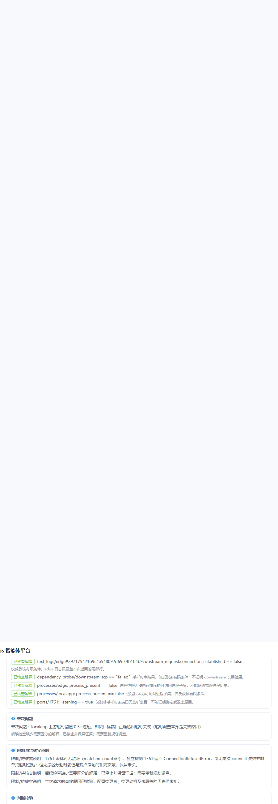

企业级 RAG 知识库问答系统,并在其上构建了一条基于 LangGraph 的 AIOps 运维诊断 Agent 支线 —— 前者支持多格式文档解析、向量化、智能问答与自动评测; 后者通过 Plan-Execute-Replan 工作流 + MCP 协议工具,演示 Agent 自主故障诊断。
从知识库问答到自主运维诊断,一套底座两条链路
支持 PDF / Word / Excel / PPT / Markdown 等格式,内置 OCR 与结构分析,上传后自动异步切分与向量化。
可自定义系统提示词、温度与模型;短期记忆滑动窗口;混合检索 + 重排序;回答可溯源到具体段落与页码。
基于 LangGraph 的 Plan-Execute-Replan 工作流,通过 MCP 协议调用监控 / 日志工具,自主完成故障诊断。
自动生成单跳 / 多跳 QA 对,结合 RAGAS 思想给出忠实度、相关性、召回率多维打分与可视化报告。
RBAC 权限;FastAPI + Celery + Milvus + MinIO + Redis 高可用组合;多用户隔离。
Milvus 不可用降级本地文件检索,MCP 不可达降级 LLM 知识分析 —— 任一组件故障都不阻断主流程。
RAG 与 AIOps 共享底座,编排相互独立
┌─────────────┐
Vue3 前端 ──HTTP──► │ FastAPI │
└──────┬──────┘
┌──────────────────┼──────────────────┐
▼ ▼ ▼
RAG 问答链路 AIOps Agent 异步任务
(retrieval+rerank) (LangGraph 图) (Celery)
│ planner→executor │
│ →replanner │
▼ │ ▼
┌────────────────┐ │ 文档解析→切分→向量化
│ Milvus / Redis │◄────────┤ │
│ MinIO / SQLite │ ▼ ▼
└────────────────┘ MCP 工具服务 写入 Milvus + SQLite
(monitor / cls)
每个选择背后都有工程权衡
而非 ReAct 自由循环 —— 诊断任务需收敛出报告,StateGraph + 硬限制保证终止,显式节点便于扩展决策。
而非 @tool 写死 —— 工具作为独立服务,客户端只认 URL,Mock → 真实后端零改动 Agent。
Agent 侧需 function calling 走 ChatOpenAI 兼容模式,RAG 侧走 ChatTongyi 原生 SDK,各取所长。
同一故障场景连续 38 轮真实诊断 · 全部结论来自真实模型 + 真实 Probe 证据
场景: localapp 启动时加载的连接配置把下游端口指到一个无人监听的端口,而登记的下游服务在另一个端口正常监听 ——
入口 /api/availability 因此返回 503。期望结论是「配置的下游端点与登记端点不一致」。
每轮都是一次独立的真实诊断: 新建隔离环境、真实 Probe/MCP 采集证据、真实模型决策、结论落库、刷新与重启后仍可读。
每轮花费为按峰值费率预留的上界(元),不是最终账单。
| 轮次 | 结论 | 诊断等级 | 模型请求 | 预留花费(元) |
|---|---|---|---|---|
| 036 | 通过 | confirmed_cause | 17 | 0.833756 |
| 037 | 通过 | confirmed_cause | 17 | 0.920086 |
| 038 | 通过 | confirmed_cause | 15 | 0.794704 |
| 039 | 未通过 | localized_fault | 14 | 0.613538 |
| 040 | 通过 | confirmed_cause | 15 | 0.776214 |
| 041 | 未通过 | localized_fault | 13 | 0.669814 |
| 042 | 通过 | confirmed_cause | 14 | 0.647550 |
| 043 | 通过 | confirmed_cause | 9 | 0.359006 |
| 044 | 未通过 | unlocated | 12 | 0.590998 |
| 045 | 通过 | confirmed_cause | 9 | 0.424168 |
| 046 | 通过 | confirmed_cause | 14 | 0.720520 |
| 047 | 通过 | confirmed_cause | 9 | 0.402616 |
| 048 | 通过 | confirmed_cause | 13 | 0.614854 |
| 049 | 未通过 | localized_fault | 15 | 0.851434 |
| 050 | 未通过 | localized_fault | 9 | 0.392268 |
| 051 | 通过 | confirmed_cause | 13 | 0.643992 |
| 052 | 通过 | confirmed_cause | 13 | 0.654384 |
| 053 | 未通过 | localized_fault | 12 | 0.575370 |
| 054 | 通过 | confirmed_cause | 13 | 0.564620 |
| 055 | 通过 | confirmed_cause | 16 | 0.812852 |
| 056 | 通过 | confirmed_cause | 15 | 0.743634 |
| 057 | 通过 | confirmed_cause | 14 | 0.715024 |
| 058 | 未通过 | localized_fault | 11 | 0.567754 |
| 059 | 未通过 | localized_fault | 11 | 0.533412 |
| 060 | 未通过 | localized_fault | 15 | 0.797578 |
| 061 | 通过 | confirmed_cause | 13 | 0.578820 |
| 062 | 未通过 | localized_fault | 16 | 0.849890 |
| 063 | 未通过 | unlocated | 10 | 0.379516 |
| 064 | 未通过 | localized_fault | 14 | 0.674874 |
| 065 | 通过 | confirmed_cause | 12 | 0.556728 |
| 066 | 通过 | confirmed_cause | 11 | 0.489786 |
| 067 | 通过 | confirmed_cause | 10 | 0.448322 |
| 068 | 通过 | confirmed_cause | 18 | 1.061668 |
| 069 | 未通过 | localized_fault | 12 | 0.516396 |
| 070 | 未通过 | localized_fault | 13 | 0.704734 |
| 071 | 通过 | confirmed_cause | 13 | 0.599166 |
| 072 | 未通过 | localized_fault | 16 | 0.779426 |
| 073 | 未通过 | localized_fault | 11 | 0.533658 |
模型写的「待核实说明」被当成反证,导致证据齐全的正确结论被降级。改为只让系统自己判定出的现场事实冲突否决结论。
结论已完整时,后续策略仍抢先安排一次检查,把结论顶掉。改为模型给出完整终态时不再抢排。
模型末轮交出没有原因、没有引用的空壳提议时被当成终态接受。改为显式拒绝并要求继续调查。
模型给了完全合法的 Probe 参数、只是没写散文式说明,整条检查被丢弃并换成别的检查。改为「参数即意图」: 参数可执行就执行。
模型把「证据齐了,不再查」写在检查字段里,被当成坏检查而清空结论。改为识别为收束。
下面两张图来自真实归档轮次(第 061 轮)的数据库,由前端页面读取并渲染,不是设计稿。


📌 诚实边界: 这是同一故障场景下的重复测量,不是通用故障诊断准确率。
仍有若干轮未通过,其中大多数是模型自身的判断问题(把未核实解释标成关键、漏采一类必需证据),
这类问题没有通过放松校验来掩盖。完整记录见仓库 docs/aiops-goal-acceptance-plan-20261106.md。
四步在本地跑起来
cd docker && docker-compose up -d
Milvus / MinIO / Redis / RabbitMQ
pip install -r requirements.txtpython scripts/create_tables.pypython -m src.main
cd frontend && npm installnpm run dev
bash scripts/demo.sh
一键启动 MCP 指标 + 日志 + 后端
📌 本页面为项目介绍页,完整源码、部署文档与详细说明请前往 GitHub 仓库。 后端服务需在本地或服务器自行部署运行。